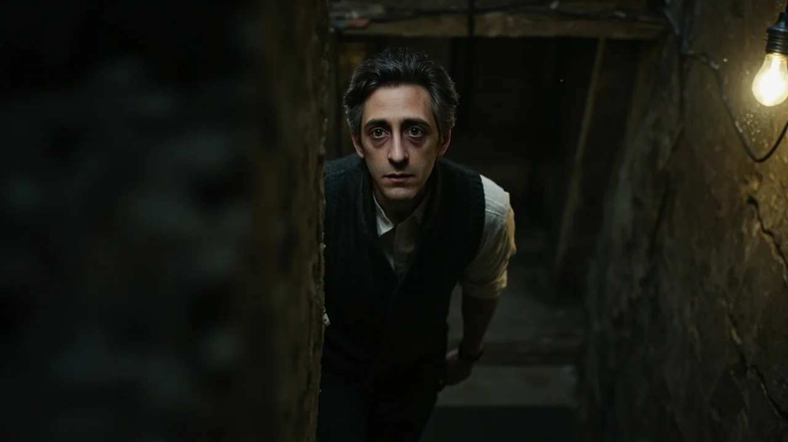
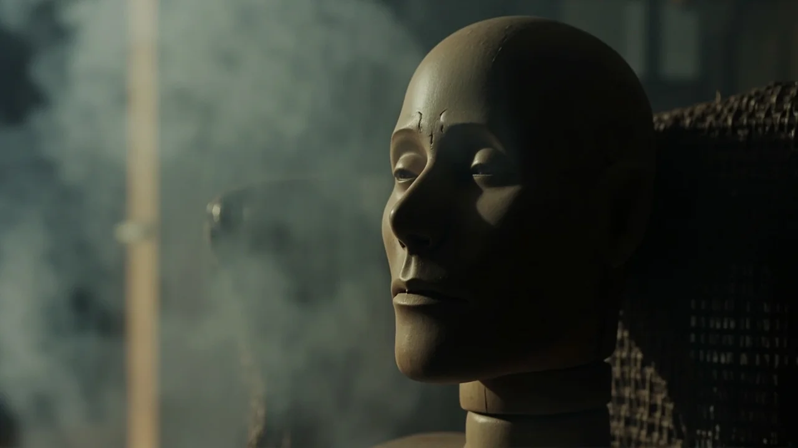
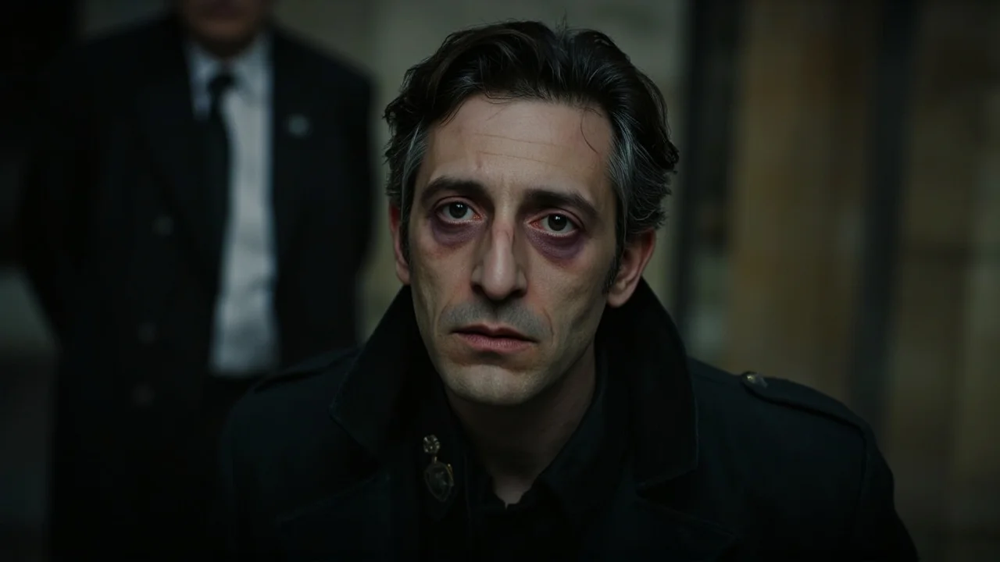
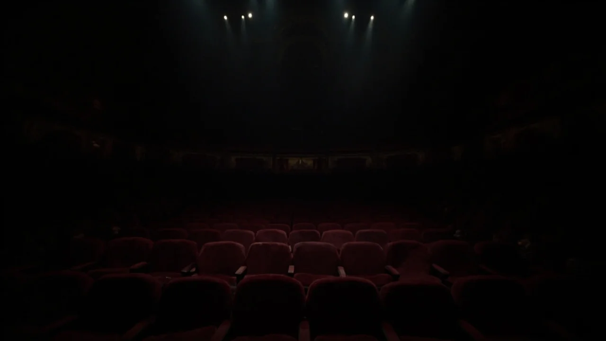
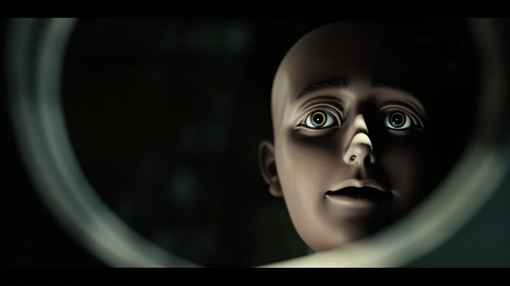

El cerrojo de hierro oxidado cedió con un chasquido agrio que levantó una nube de polvillo sobre las solapas de Martín. Hacía siete años que no bajaba al sótano del Teatro Rialto, desde aquella noche en que las poleas del telón reventaron y su compañero de vodevil, Gonzalo, desapareció entre los escombros de la fosa de contrapesos sin que nadie hallara su cuerpo.
A su espalda, la linterna de Samuel Olmedo, el veterano tramoyista de sesenta y dos años, proyectó un círculo amarillento sobre el suelo de tierra apisonada.
—Tu padre no quería que nadie bajara aquí tras el precinto judicial, muchacho —dijo Samuel con voz rasposa, ajustándose la gorra de paño—. Decía que un teatro clausurado es como una boca abierta: termina tragándose lo que pase por la acera.
Martín no respondió. A sus treinta y ocho años, sentía que su voz era un instrumento roto que prefería silenciar. Esquivó rollos de moqueta apolillada hasta una hornacina oculta tras un armario de vestuario. Dentro descansaba una vitrina de roble sellada con dos tiras de lacre rojo.
En su interior estaba el muñeco.
Medía unos noventa centímetros, erguido sobre un soporte metálico con frac de terciopelo negro y pajarita descolorida. Sus manos de nogal tenían finas bisagras de latón en cada falange, pero lo que heló a Martín fue la cabeza: era un óvalo de madera maciza, suavemente redondeado por gubia y lija, enteramente desprovisto de facciones. No tenía ojos, nariz, boca ni mandíbula articulada. Solo una superficie lisa y oscura que reflejaba la luz como un huevo pulido.
En la base de la vitrina había una placa grabada a punzón:
*Nunca respondas cuando te llame por tu nombre.*
—Déjalo donde está, Martín —advirtió Samuel—. Don Aurelio lo encerró cuando tu madre enfermó del pecho. Decía que algunas maderas retienen los ecos de lo que no debió decirse.
—Es una pieza de colección —repuso Martín, quebrando el lacre reseco—. Pagará tres meses de alquiler atrasado.
Sacó el maniquí con cuidado. La madera era densa y fría, y sus brazos ofrecían una leve resistencia elástica, similar a la tensión muscular de un brazo vivo. Se despidió de Samuel y salió bajo la llovizna con el bulto envuelto en una manta vieja.
El apartamento de Martín olía a café recalentado y tabaco de liar. Apoyó el muñeco de nogal en una mecedora de mimbre junto al ventanal del salón y se sentó a cenar sopa frente a la lluvia que azotaba los cristales.

A las once y diez de la noche, una voz sonó desde la penumbra del pasillo interior.
Era una voz suave, templada y con esa cadencia melodiosa que arrastraba las erres con un deje norteño. Una voz entrañable que Martín llevaba una década añorando en sueños:
—Martinito… ven aquí, hijo. Te has dejado la ventana abierta y se te va a enfriar el pecho.
A Martín se le cayó la cuchara sobre el plato hondo. Nadie en el mundo lo llamaba por ese diminutivo desde que enterraron a su madre en el cementerio de San Isidro.
Caminó hacia el pasillo con el pulso desbocado. Al encender la bombilla del salón, la mirada se le clavó en la mecedora.
El muñeco ya no miraba al frente: su cabeza ovalada de madera lisa se había inclinado quince grados hacia él. No había engranajes mecánicos en su cuello, pero el aire a su alrededor olía a agua de lavanda y alcanfor: el aroma exacto de los vestidos dominicales de su madre.
—Madre… —susurró Martín con los ojos llenos de lágrimas—. ¿Eres tú de verdad?
La madera inexpresiva no se movió, pero una risa queda y dulce brotó de su interior con la limpidez de una campana de plata:
—Claro que soy yo, mi niño. ¿Quién iba a ser, si no tu madre que tanto te echa de menos?
Durante tres noches, Martín se entregó a una fascinación enfermiza.
Encendía una vela sobre la mesa baja y colocaba el maniquí frente a él. La voz materna surgía del nogal recordando secretos íntimos: la cicatriz en media luna que se hizo de niño en el columpio, el sabor del dulce de membrillo en las tardes de invierno o el pánico cerval que sintió al hablar por primera vez a través de un títere en Nochebuena.
Martín lloraba abrazado a las rodillas de madera del maniquí, ebrio de una ternura perdida.

La pesadilla comenzó la madrugada del jueves.
La vela chisporroteó y desprendió un humo denso que apestaba a herrumbre mojada y aceite de maquinaria.
—No debiste soltar la cuerda, Martín.
Ya no era la voz de su madre. Era una voz masculina, áspera por el tabaco y quebrada por un terror histérico.
Martín se levantó de golpe, volcando la vela. En la penumbra, el muñeco sentado frente a él elevó el tono con una vibración metálica que hizo tintinear los vasos de la alacena:
—Oíste partirse el madero del contrapeso, Martín —acusó la voz de Gonzalo—. Me quedé atrapado entre las sogas y la polea. Gritaba tu nombre desde el fondo del foso. Me viste desde la trampilla… ¡y apagaste el cuadro de luces para que nadie viera la sangre y no se suspendiera el estreno!
—¡Cállate! —gritó Martín, tapándose los oídos—. ¡Fue un accidente fortuito!
—Me dejaste ahogarme en el polvo para salvar tu pellejo —siseó el muñeco con un gorgoteo cavernoso—. Dijiste que hui con la recaudación. Mentiste a la policía, mentiste a mi familia…
Enloquecido de ira y pánico, Martín se abalanzó sobre el maniquí. Lo arrojó a la tarima y le pisó el pecho. Agarró su brazo izquierdo de nogal con ambas manos y lo retorció hacia atrás para reventar las bisagras.
Un chasquido seco partió la madera maciza.
En ese instante, un dolor desgarrador estalló en el hombro izquierdo de Martín. Un crujido idéntico resonó dentro de su propia clavícula. Cayó de rodillas aullando de dolor sobre el suelo, con su brazo izquierdo colgando inerte, descoyuntado y frío.
En el suelo, el muñeco yacía con su brazo de madera quebrado en el mismo ángulo exacto.

A las nueve de la mañana, dos golpes secos sacudieron la puerta del piso. Martín abrió con dificultad extrema, pálido como la cal, sosteniéndose el brazo lesionado dentro de un cabestrillo improvisado con una toalla.
En el descansillo aguardaba la inspectora Elena Barral, con gabardina oscura y gesto severo:
—Señor Soler, sus vecinos del segundo piso han denunciado que alguien merodeaba de madrugada susurrando amenazas de muerte junto a sus mirillas.
—Yo no he salido de casa en toda la noche —balbuceó Martín—. Me he caído en el salón y me he roto el hombro.
La agente encendió una grabadora de mano. Del altavoz brotó un audio de las cámaras del portal: una voz ronca y pausada susurraba los nombres y apellidos de los vecinos con macabra precisión.
Era la voz de Martín. Su tono exacto, su timbre inconfundible de ventrílocuo.
—Esa voz salió de este descansillo a las tres y media, señor Soler. Volveremos con una orden judicial. No intente marcharse de la ciudad.
Martín cerró la puerta y pasó los cerrojos con mano temblorosa. Arrastrándose hasta el armario, volcó el baúl de zinc donde guardaba los legajos de su padre. Entre contratos teatrales vencidos, halló el cuaderno de tapas de hule negro de Don Aurelio. En una página de mil novecientos setenta y dos leyó:
*«El tallista de Toledo me confesó que cortó la cepa de un nogal crecido sobre una fosa común. Las raíces bebieron demasiados nombres callados a la fuerza. El maniquí nace sin cara porque es un cuenco vacío: para esculpirse un rostro definitivo y respirar por su cuenta, necesita que su dueño le entregue su culpa más honda. Si responde a su llamada, el muñeco se bebe su alma y le devuelve la carne convertida en madera. Dios me perdone, pero no fui capaz de quemarlo.»*
Martín levantó la mirada hacia el rincón del salón.
Bajo el barniz oscuro de la cabeza lisa del muñeco asomaban ya dos leves cuencas a la altura de los ojos, y una incisión recta y fina marcaba el lugar exacto de los labios.
La lluvia caía con furia torrencial cuando Martín forzó la puerta de carruajes del Teatro Rialto pasadas las diez de la noche.

Llevaba el muñeco atado a la espalda con una soga de cáñamo y una garrafa de queroseno en su mano sana. Subió al escenario desierto y sentó al maniquí en una silla de enea, justo sobre la trampilla donde Gonzalo cayó al vacío siete años atrás.
—Sé lo que eres —dijo Martín con la voz quebrada por el dolor—. Y sé lo que pretendes.
El muñeco respondió de inmediato, alternando voces sin pausa:
—Martinito, suelta esa garrafa, hijo mío —suplicó la voz dulce de su madre.
—Siempre fuiste un cobarde mediocre, Martín —escupió la voz adusta de su padre—. Tu compañero tenía el talento; tú solo ponías las muecas y cobrabas en taquilla.
Y de pronto la voz de Gonzalo resonó en las gradas vacías con un aullido de rabia:
—¡Confiésalo! ¡Dilo en voz alta antes de pudrirte! ¡Diles que me oíste suplicar y apagaste las luces para salvar tu carrera!
Las lágrimas cegaron a Martín. Se desplomó de rodillas sobre las tablas del escenario. Siete años de silencio podrido le reventaron en el pecho como una herida abierta:
—¡Sí! —aulló Martín, sollozando con la frente pegada a la madera—. ¡Tuve miedo! ¡Oí cómo se partían las vigas y me quedé paralizado! ¡Te vi sangrar bajo los hierros y no tiré de la palanca porque si se suspendía la función me arruinaba! ¡Te dejé morir allí abajo, Gonzalo! ¡Fui yo quien te mató!
Un silencio glacial invadió la sala en penumbra.
Martín levantó la vista. La madera del muñeco crujía con chasquidos rítmicos, como ramas verdes retorciéndose al fuego. La superficie lisa se onduló en ondas vivas: se abrieron dos ojos castaños idénticos a los suyos, brotó la nariz aguileña con su desvío en el tabique y los labios se curvaron en una sonrisa burlona.
Era su propia cara. Sus arrugas prematuras en la frente, su cicatriz en la ceja izquierda.
El autómata alzó lentamente una mano articulada, tocó su barbilla recién formada y exhaló una bocanada de vaho caliente:

—Gracias, Martín —susurró con la voz limpia del ventrílocuo antes del accidente—. Hacía mucho que no tenía un cuerpo para salir a la calle.
Martín sintió que sus propios labios perdían elasticidad, endureciéndose como corteza de árbol seco. Sus dedos se entumecieron en un bloque rígido e inmóvil.
Con un último esfuerzo de voluntad humana, Martín pateó la garrafa de queroseno. El combustible empapó el escenario, la silla y el frac del muñeco. Con los dientes sacó una cerilla de la caja, la raspó contra el rascador con la mano derecha y la arrojó al charco:
—¡Aquí nos quedamos los dos!
El fuego estalló en una llamarada colosal que trepó por los telones de terciopelo. El muñeco se alzó chillando con cien voces superpuestas mientras la techumbre del Teatro Rialto comenzaba a desplomarse en una lluvia de vigas incandescentes.
Los bomberos tardaron cuatro horas en sofocar el siniestro. El Teatro Rialto quedó reducido a vigas de hierro retorcido y cascotes negros. La policía científica rastreó el foso de la orquesta durante días enteros: hallaron restos calcinados de tramoya, pero ni un solo vestigio óseo ni rastro alguno del cuerpo de Martín Soler o del maniquí de nogal.
Tres semanas después, un vídeo grabado con teléfono móvil comenzó a circular por redes sociales y foros de internet, alcanzando millones de visualizaciones.
La grabación mostraba una actuación callejera nocturna bajo los soportales de una plaza empedrada en una ciudad europea. En el corro de transeúntes, un hombre con gabardina oscura y el rostro oculto bajo una capucha manejaba con destreza un muñeco de nogal con frac negro de terciopelo.
El maniquí tenía el rostro exacto de un hombre de treinta y ocho años, de facciones afiladas y ojos castaños profundos, tallados con un hiperrealismo perturbador.
En mitad del número, el muñeco dejó de recitar el diálogo cómico. Giró lentamente la cabeza hacia la lente del teléfono móvil que grababa la escena. Sus ojos de madera parecieron enfocar la pupila exacta de quien miraba la pantalla al otro lado.
Entonces, con la voz viva, templada y pausada de Martín Soler, el muñeco susurró sin mover los labios:
—Sé que me estás escuchando, David Álvarez… Nunca debiste responder cuando te llamé.